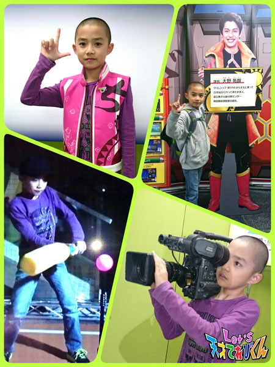
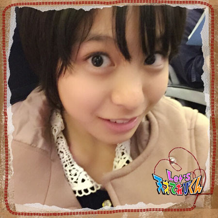
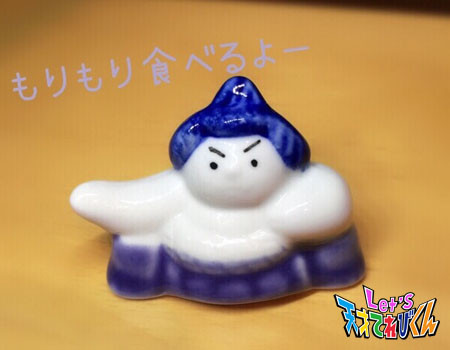
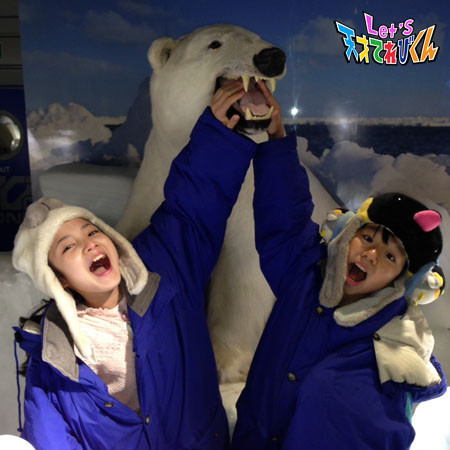
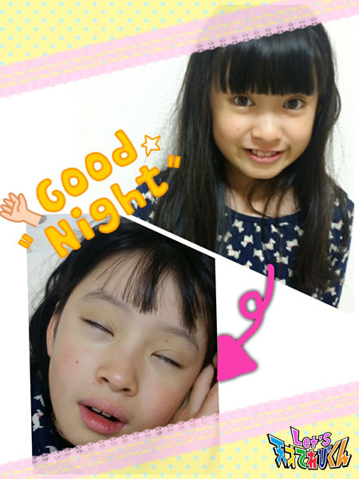

<<2014年10月 | トップページ | 2014年12月>>
2014年11月
思わず大笑いしてしまったこと［辻村晃佑］
最近、ほんとに寒くなってきましたね。
ぼくもかぜをひいて大変でした。
みんなも気をつけてね～ヽ(；▽；)ノ
最近思わず大笑いしてしまったことは、
武尊と竜心と一緒にご飯を食べたときのことかなーo(^▽^)o
竜心のお父さんのギャグがすごく面白かったんです。
しかも竜心そっくり！！
みんな笑って、とても楽しい食事でした(-^〇^-)
そのとき、アプリで将棋をやったけど、
武尊には惨敗で、竜心とは引き分けでした／(-_-)＼
くやし～～～～(´-ω-`)
次は、必ず勝ってやる！！
ほかのみんなも、また一緒にご飯食べに行こうね～ヽ(*´∀｀)ノ
Let's 食事会！
NHK文化祭に行きました！
はに丸に会いました！
投稿者:辻村晃佑 | 投稿時間:18時45分 | カテゴリ：てれび戦士 | 固定リンク
思わず大笑いしてしまったこと［飯島緋莉］
みなさん、こんにちは^o^
飯島のほうの緋梨です～
あっという間に10月がすぎてしまいましたね～
みなさんは、ハロウィンを楽しめましたか？
緋梨は、黒猫の仮装をしました。
猫耳のカチューシャをするだけで、黒猫になった気分になりますね～
さて、今回のお題は、
「 最近大笑いしたこと 」
みなさんは、最近大笑いしたことはありますか？
緋梨が最近大笑いしたことは、
漢字の宿題が終わって、ランドセルに漢字ドリルをしまおうとしたときです。
なんと、さっきまでやっていた漢字ドリルが消えてしまったのです。
ま・さ・か・これは！？
妖怪のしわざ！？！？
そんなはずはないと思って、
ソファーを探していたときです。
なんと、その漢字ドリルは、
自分の手で持っていたのです！
ひとりで大笑いしてしまいました（≧∇≦）
みなさんも、こんな経験ありませんか？
ありませんよね(>_<)
と・に・か・く！
何かなくしたときは、
まずは、近くを見なくちゃ
みんなも Let's 大笑い（≧∇≦）
投稿者:飯島緋梨 | 投稿時間:18時54分 | カテゴリ：てれび戦士 | 固定リンク
思わず大笑いしてしまったこと［小西憧弥］
こんにちはー(^o^)/ 憧弥です！
最近、朝が寒いです！
寒がりだから、コタツやファンヒーターを早く出して～ってお願いしたんだけど、
出すとコタツから動かないからダメ！って言われちゃいました(>_<)
でも、パジャマの上に着る大好きなモコモコは、出してもらえた～（≧∇≦）
今回のお題は、「 思わず大笑いしてしまったこと 」 です！
ついこの前のハロウィンのとき、
お姉ちゃんが家で恐竜の着ぐるみを着て喜んで踊ってたの。
家族でぬいぐるみみたいで 「 かわい～ 」 って言ってたら、
着ぐるみが大きすぎて踏んじゃって、思いっきりスッコーーンって転んだの。
びっくりしたあとに、思いっきり大笑いしちゃいました(^○^)
お父さんやお母さんも大笑いしてた！
ケガしなくて、よかった（笑）
ほかには、変顔対決でよく大笑いします。
ぎゃははは……！
あとで、お姉ちゃんから、その着ぐるみをもらいました～！やった～＼(^o^)／
投稿者:小西憧弥 | 投稿時間:18時45分 | カテゴリ：てれび戦士 | 固定リンク
思わず大笑いしてしまったこと［桐畑カレン］
こんにちは。
秋ですね。秋といえば、食欲の秋ですね！
和栗のモンブラン、パンケーキ、みつがたっぷり入ったおいもさん…などなど、
おやつがおいしい～(^o^)
おやつは、別腹カレンです(*^^*)
さて、今回のお題は、
【 思わず大笑いしてしまった～（＆思わず大笑いされた～）こと 】 です＼(^^)／
とび箱を華麗にとびたい！
という野望を持っている私は、体育のとび箱をがんばっていますo(^o^)o
助走をしてとんで、とび箱の上に立つという練習をしていたときのことです。
たったった～と走って、
とび箱に手をついて、
ピョーン
と、とびました。
頭の中では、シュタッ！
と、とび箱の上に立っているはずでした。
でも、みんなの笑い声が…
はっ(￣□￣;)！！と気づいたら、
なんと！！
とび箱の上に、ちょこんと正座していました。
まるで、
「 も、も、も、もうしわけございませんでした～ 」
と、正座して、あやまっている人みたいな感じでした。
「 何でこうなるの？(・_・;？」
と思ったけど、なんだか面白くって、自分でも大笑いでした～d=(^o^)=b
だいぶ寒くなってきたので、
みなさんもかぜをひかないように、あたたかくしてくださいね(*^^*)
投稿者:桐畑カレン | 投稿時間:18時45分 | カテゴリ：てれび戦士 | 固定リンク
思わず大笑いしてしまったこと［瀧澤翼］
どーも！
最近、寒くなってきてネックウォーマーをして、学校に行く瀧澤翼ですd(^_^o)
11月1日に行われたNHKの文化祭で異次元獣撃退訓練がありました！
たくさんの人が来てくれて、うれしかったです！
入れなかった方たち、ごめんなさい。
また次の機会に会おうね(^_-)－☆
そして、雨の中を来てくれたみなさん、本当にありがとうございました＼(^o^)／
さぁ、今回のテーマは、「思わず大笑いしてしまった」こと。
この間、久しぶりに昔の写真をみていたら、
小さいときに、おじいちゃんとおばあちゃんの家で
変顔大会をしたときの写真が出てきまし た！！
見てください！！
笑っちゃうでしょ
それから、どこかのお店の前にいたサルの置物と一緒に撮った写真がこれ！
なつかしくて、家族で大笑いしました！
これからも、たくさんの人を笑顔にできるようにがんばりますp(^o^)q
応援してね！
おまけに、この写真♪
小学生になる前から帽子好きの僕でしたV(^o^)V
Let's（笑）
投稿者:瀧澤翼 | 投稿時間:18時45分 | カテゴリ：てれび戦士 | 固定リンク
思わず大笑いしてしまったこと［杉本瑛］
みなさま、ご機嫌うるわしゅう☆
杉本瑛です。
今回は、『 思わず大笑いしてしまったこと 』 です。
私には、100歳のひいおばあちゃんがいます。
ひいおばあちゃんは、とても元気でいつもニコニコしている楽しいひとです。
お家に遊びに行ったとき、スマホに興味があるから
何かしてみせてほしいとリクエストされました。
そこで、私は写真を加工するアプリを使って、
実際にひいおばあちゃんの写真を加工することにしました。
ふだんは絶対にしない髪型でかわいくしようと思い、大胆にアレンジして2人で大笑いしました。
ひいおばあちゃんは、
「 珍しいものを見た。ニュースで見たハロウィンの仮装みたいだね。」
と、とても喜んでくれました。
記念に欲しいから写真を現像してね、と頼まれました(*^_^*)
投稿者:杉本瑛 | 投稿時間:18時45分 | カテゴリ：てれび戦士 | 固定リンク
思わず大笑いしてしまったこと［小澤竜心］
こんにちは！竜心です。
この間は、NHK文化祭でした。
たくさんの方が見にきてくれて、とってもうれしかったです♪
ありがとうございました＼(^o^)／
ぼくも茶の間戦士になって写真をとりました～。
いろいろと体験できて、楽しかったです！

では、【 思わず大笑いしてしまったこと 】 聞いてください。
お父さんと駅からの帰り道。
ぼくが、「 歌を歌って元気に帰ろう！」 と言って、
『 ドレミの歌 』 を歌い出したら、途中からお父さんが参加してきました。
ぼくの 『 ドレミの歌 』 に、お父さんが合いの手をいれるんです。
ぼくは、楽しくなって何回も歌いました。
そのたびに、すべて合いの手がちがうので、
これが面白くて、大はしゃぎで家まで帰ってきました。
どんなふうに歌ったのかというと……σ(^_^;)？
その場で思いつくがままに歌ったので、
あとで思い出そうとしても、思い出せないんです～ヘ(゜ο°;)ノ
あぁ…あんなに笑ったのに～！
投稿者:小澤竜心 | 投稿時間:18時54分 | カテゴリ：てれび戦士 | 固定リンク
思わず大笑いしてしまったこと［原田明莉］
★☆ Hello ☆★
だーはらですっ♪♪
もー、冬ですねー
メッチャ寒いー(>_<)
寒い中、大阪に行って来ましたよー
結構楽しかったー(^O^)
大阪、ある意味元気な人がいっぱいでした（笑）
ではでは、お題に入りますねー
今回のお題は、『 思わず大笑いしてしまったこと 』 です！
もぅ、これしかない！
考えることなく、書けたよー
こないだ、弟にアルファベットを教えてて…
まずは、
★ あ → A
★ い → I
★ う → U
★ え → E
★ お → O
を教えたんです！
その次に、子音を教えたんです！
★ あかり
「 じゃぁ、B！！」
「 B は、ば ・ び ・ ぶ ・ べ ・ ぼ の子音をもっているんだよ！」
「 ば！は、何と何のアルファベットの組み合わせでしょー？」
☆ 弟
「 わかんなーい 」
★ あかり
「 じゃあね 」
「 ばーーーーーーーーー 」
「 って、長く言ってみ！」
☆ 弟
「 ばぁぁぁぁぁぁぁぁぁぁ 」
★ あかり
「 最後に自分が言った言葉は、なんでしょー？」
☆ 弟
「 あ？」
★ あかり
「 そー！」
「 あ！あ は、英語で A でしょ？」
「 そしたら、何と何のアルファベットの組み合わせでしょー？」
☆ 弟
「 B と A！」
★ あかり
「 せーーーかーーーい！」
それで、だんだんわかってきた弟に問題をだしたんです！
「 B と A 日本語で？」
☆ 弟
「 ば！」
★ あかり
「 B と I 日本語で？」
☆ 弟
「 び！」
★ あかり
「 じゃぁ、B と U 日本語で？」
☆ 弟
「 ・・・・・ 」
♪───Ｏ（≧∇≦）Ｏ────♪
★ あかり
「 わかった?！」
☆ 弟
「 ・・・バウ！！」
それを聞いた瞬間、お母さんとあかりは、一時停止しました（笑）
そのあと、弟の答えに爆笑しましたー！
これが、私の思わず大笑いしてしまったことです（笑）
やっぱ、笑うって楽しいですねー！
☆★ Let's laugh ★☆（笑う）
投稿者:原田明莉 | 投稿時間:18時45分 | カテゴリ：てれび戦士 | 固定リンク
思わず大笑いしてしまったこと［林武尊］
こんにちは、武尊です。
ずいぶんと寒くなりましたね。
みんな、風邪を引かないように気をつけてね（＾◇＾）
ぼくは、3歳までバリ島で生活をしていました。
そのせいか、すごーく寒がりです…
小さいときにあたたかいところにいると、
毛穴が広がって、寒く感じるって聞いたけど、ほんとかなー？？
そして、今年も早速、耳あてを買いました。
あったかくて気持ちいい～

今回のお題 『 思わず大笑いしてしまったこと 』
それは、お母さんのハプニングです。
とある理由で、お母さんのくつ底がぺらんぺらんになりました。
ずいぶんと歩きにくそうだったけど、
ぼくは用事があったので、
そのまま、お母さんと別れました。
あとで話を聞いたら、
別れたあとに、すぐコンビニで瞬間接着剤を買って、
しっかりと裏をくっつけたそうです。
はなれないように、つま先立ちでギュッと押したら、
くつにソックスがくっつき、ソックスに足がくっついちゃったんです！
それをぼくが聞いたとき、大笑いしながら
「 はずれたの？」
と聞くと、
「 なかなかはずれかったけど、
くつをガンガンしたり、引っぱったりして、やっと取れた 」
と、お母さんは言いました。
お母さん、よかったね（≧∇≦）
投稿者:林武尊 | 投稿時間:19時00分 | カテゴリ：てれび戦士 | 固定リンク
思わず大笑いしてしまったこと［赤崎月香］
こんにちは ヽ(^▽^@)ノ
赤崎月香です。

☆。・:*:・°★,。・:*:・°☆
何をしても！
何を見ても！
何の話をしていても！
めちゃめちゃ笑ってしまいます♪ (⌒▽⌒) あはは～
お母さんに
「 箸が転んでも、おかしいお年ごろなのね～ 」
と、言われました！！！
なんじゃそれ？！
・・・・・箸が転がる・・・・・
ヾ(＠>▽<＠)ノ ぶぁっはははっははは♪
おもしろい♪
☆。・:*:・°★,。・:*:・°☆
ということで、
今日は、【 思わず大笑いしてしまった 】 ことです。
 この前、カレンちゃんと海鮮丼を食べに行きました。
この前、カレンちゃんと海鮮丼を食べに行きました。
帰り道で
「 おそろいの物を買おうよ～♪ 」
ということになって、
街をブラブラしていたら、
あるお店にかわいい箸置きがありました。
たくさん種類があって、
どれにしようか迷って ((((~~▽~~ ;)))
よしっ！！！
ここは、年下のカレンちゃんに選ばせてあげよう♪
そして、カレンちゃんが選んだ箸置きは・・・

ぶはっ！！！
かわいすぎる～～～
おもしろすぎる～～～
たくさん種類があるのに、
その中でもお相撲さんって！！！
カレンちゃんのナイスセンスに大笑いしました♪
お互い箸置きの裏に名前の1文字を書いて、
今使っているよＯ(≧▽≦)Ｏ
お相撲さんの腕の上にお箸を置くの♪
いや～、いいお買い物したわ～
☆。・:*:・°★,。・:*:・°☆
では、
もりもり食べて
よーく眠って
風邪をひかないように～ (^_-)---☆
またね～ヾ(*'-'*)
投稿者:赤崎月香 | 投稿時間:18時45分 | カテゴリ：てれび戦士 | 固定リンク
思わず大笑いしてしまったこと［笹原尚季］
こんにちは 。笹原尚季です♪
この前、小学校の音楽祭がありました。
体育館にすごくいい声がひびいたので良かったです。
今回のお題は、 『 思わず大笑いしてしまったこと 』 です。
僕がまだ幼稚園に行っていたころ、
いちばん上のお兄ちゃんが学校でサケの卵をもらってきました。
みんなで 【 いくらちゃん 】 という名前をつけて、卵から育てました♪
大事に世話をしていて、メダカよりも大きくなったころ、
2階の水そうから飛び出して動かない
いくらちゃんを階段の真ん中あたりで見つけました！
あわてて、お水に入れたら元気になったけど、
おでこに大きな赤いたんこぶができていました！
たんこぶのある小さなお魚∑(ﾟДﾟ)
元気になったから、すごくうれしかったけど、
それよりも、たんこぶがあることに、みんなで笑っちゃって(o^^o)
それから、もっと大きくなって大きな川に帰すときにも、まだたんこぶがありました。
痛かっただろうな～(>_<)

あ～！
食べられるぅ～！！
なんてね♪
フワフワそうに見えるけど、カチコチの毛皮のクマ！
フワフワだ～って、さわったらびっくり！！
思い込みって、おもしろい♪
これは大笑いじゃなくて、ちび笑いかな？(((o(*ﾟ▽ﾟ*)o)))
みんなも笑っちゃった！っていう話、今度教えて下さいね☆
投稿者:笹原尚季 | 投稿時間:18時30分 | カテゴリ：てれび戦士 | 固定リンク
最近知ってびっくりしたこと［桐畑カレン］
こんにちは。カレンです(*^^*)
今回のお題は、『 最近知ってびっくりしたこと 』 です。
私は知らないことがたくさんあるから、
いつも周りの人やテレビや本から教えてもらっています。
そのたびに、びっくりしている気がします(^_^ゞ
「え～、そうだったの！！」とか、
「そうなんだ！！知らなかったあ」とか。
そして、仕入れた知識を家族に
「ねえ、知ってる～？」
と披露しようすると、私が披露する前に、
「知ってる！」
と、笑いながら言われます。
がっかりするけど、気にしないで披露すると、
「へえ～、それは知らなかった。すごいね。」
と、たまに言われます。
そのときは、ニヤリとします。
こんな私だから、
びっくりしたことがたくさんありすぎて、思い浮かばなかったので、
「最近知ってびっくりしたことって、なんだろう？」
と、お母さんに聞いてみましたが、
「いつもいろんなことに、びっくりしてるから分からないな～」
と言われました(￣▽￣;)
困ったなあ(+_+)
なので、とりあえず、今思い出したカレン編を紹介したいと思います(/--)/
【 寝ているときに、半分目を開けて寝ている！】
お母さんに言われたときは、びっくりしました。
この写真は、とてもひかえめな半目にして、とってもらいました。

本当の写真は、こわすぎてブログにのせられないと思ったからです(T-T)
だけど、寝相の悪さがプラスされて、こわいけど、どちらかというと面白いです。
「半目って…こわいし、こんな顔して寝てるんだ(;o;) 」
と、びっくりしたけど、見なれてくると面白いからいいのかなと思いました(^.^)
投稿者:桐畑カレン | 投稿時間:18時54分 | カテゴリ：てれび戦士 | 固定リンク
最近知ってびっくりしたこと［小西憧弥］
こんにちはー(^-^)/ 憧弥です。
運動会、頑張りました！
でも、運動会のいちばん最後にある赤白対抗の大玉運びは3回戦もあったのに、
背が小さくて、いちども大玉にさわれなかったから、くやしかったです(>_<)
来年は、さわりたーい！
今回のお題は、「最近知ってびっくりしたこと」です！
いちばんびっくりしたのは、
お母さんがTOKIOのリーダーさんと同じ中学校で同級生だったってこと！
卒業アルバムに中学生の頃のリーダーさんがうつってたんだよ！
あるテレビ番組が好きで、いつも見てるから、すごーくびっくりしました。
嬉しい！！(^▽^)
あと…。
ちょっと、びっくりしたことは、ぼくたち子供の体の70%は水分でできていて、
夏とか暑いときに、せん風機をかけたまま寝ちゃうと、水分が少なくなって、
もしかしたら死んでしまうかもしれないんだって！
こわいから、絶対にせん風機は消して寝ることにします(>_<)
みんなも気をつけてください！
投稿者:小西憧弥 | 投稿時間:18時45分 | カテゴリ：てれび戦士 | 固定リンク
最近知ってびっくりしたこと［齋藤茉日］
こんにちは♪
茉日です(^-^)/
最近、毎日朝ごはんに目玉焼きを食べています♪
この目玉焼きは、卵ですよね！？
そう、卵には
驚きの事実が隠されていたんです(・Д・)ノ
お題は、『 最近知ってびっくりしたこと 』
驚きのスクープは、卵のサイズに隠されていました(^-^)/
卵って、サイズがあるのを知っていますか？
「 LL 」・「 L 」・「 M 」・「 MS 」・「 S 」・「 SS 」
とあって、一般的には S ・ M ・ L といいますが、卵のサイズの基準って？
普通、白身も黄身も量が多いのが、いちばん大きい 「 Ｌサイズ 」 で、
いちばん量が少ないのが、いちばん小さい 「 Ｓサイズ 」 だと思いますよね！
でも、実は… … …
「 白身と黄身の量 」 ではなくて、 「 白身 」 の量で決まるって
知ってましたか？
ついこの間、テレビで見てびっくりしました(^-^)/
黄身のサイズは、ＳサイズもＬサイズもほとんど同じなんです！！
だから、黄身をたくさん食べたいからって、
LLサイズを買っても、あんまり変わらないんです！
私はこれを聞いて、とても驚きました( ^ω^ )
みなさんは、もう知ってましたか？
それとも驚いてくれましたか？
これを知って、卵にはまだまだ秘密がありそうだなと思いました！
来年の自由研究は、【 卵について 】 かしら？
それでは、また今度♪(^-^)/
投稿者:齋藤茉日 | 投稿時間:18時45分 | カテゴリ：てれび戦士 | 固定リンク
最近知ってびっくりしたこと［瀧澤翼］
どーも！
最近、女装をした瀧澤翼です（笑）
なんだか、ちょっと寒くなって来ましたね(>_<)
もう寒いから、金髪のかつら……じゃなかった（汗）
帽子がほしいです。
寒いといえば、キャニオニングを思い出しますね～。
あのときは、水が冷たかったなぁ。
まあ、思い出話は、ここらへんにして本題に入りましょう。
最近、テレビを見て、びっくりしたことがあります。
それは、警察には、警視庁と警察庁があることです！
ぜ～んぶ同じだと思ってたんだけど、どうやら違うようなので調べてみました。
警視庁は、東京都の警察本部で刑事事件を担当しているそうです。
ドラマや映画の刑事さんは、ここにあたるんですね。
そして警察庁は、全国の警察をまとめる役目を果たしているんだって！
エリート中のエリートしか、入れないそうです。スゲー！
ということで……
行ってきました～！警視庁と警察庁！！
警察官のみなさんが、たくさんいたので控えめにパシャリ！！
本物の警察官って、カッコよかったなぁ( ´ ▽ ` )ノ
博物館で白バイにも乗ってきましたよ。
いろいろ調べると、びっくりすることって多かったです。
次回のブログもお楽しみに v(^o^)
Let's！！
投稿者:瀧澤翼 | 投稿時間:18時45分 | カテゴリ：てれび戦士 | 固定リンク
最近知ってびっくりしたこと［原田明莉］
★Hello★
だーはら → 原田です！
前回、書いた 『 今挑戦したいこと 』 のブログに
NYチーズケーキ作りに挑戦したいって書きましたよね！
ほんとに作っちゃいましたー
友達と2人で材料を買いに行って、
すんごい楽しかったですー
意外とねー
土台とかもうまくできてね
焼いたときは、こげたーーー
とか思ったけど、それが色がついただけであって、メチャクチャおいしかったです！
ではでは、今回のお題に入りますね！
今回のお題は…
『 最近知ってびっくりしたこと 』 です！
なんだろー
最近知ってびっくりしたことって
思い出せないなー
とゆーことで、
最近ではないけど、
2年前くらいに、今知ったの！？
と言われるようなことがあったので、そのことを書きますね！
それは、お好み焼きにかけたかつお節を見て、
かつお節が本当に生きていると思っていました（笑）
確か、明莉がどこかで
「かつお節って、生きてるんだよねっ」
て言ったら
お母さんが、
「そんなわけないでしょー」
「湯気でかつお節がゆれてるのょー」
と言った、お母さんの発言にびっくりしましたー
いろんなことを知ってくると、
見える世界も変わるかもしれないですね！
★Let's Discovery★（発見）
投稿者:原田明莉 | 投稿時間:18時45分 | カテゴリ：てれび戦士 | 固定リンク
最近知ってびっくりしたこと［林武尊］
こんにちは(o^^o)
武尊です。
この前、学校の移動教室でガラスアートに挑戦しました。
作品はこれ↓
はし置きです。
きれいに出来て、我ながら満足(^_^)v
では、今回のテーマ
『 最近ビックリしたこと 』
ぼくは、普段あまりビックリすることがありません。
ですが、この前、江戸博物館に行ったとき、ビックリすることがいっぱいありました！
ひとつ目は、昔はなんとタクシーの運ちんが1円だったことです！
見たときは、「安いなぁ」と思ったけど、
今と昔はのお金の価値のちがいがわかったとたんに
「高いなぁ」と思いました。
あとは、昔にテレビやゲームがなかったことです。
昔はテレビとかないのに、どうやって情報を得ているのか、ふしぎに思いました。
いっぱいあって書ききれないけど、
昔の人は、自分でやって努力していたんだなと思いました！
投稿者:林武尊 | 投稿時間:18時54分 | カテゴリ：てれび戦士 | 固定リンク
最近知ってびっくりしたこと［飯島緋梨］
こんにちは。
飯島緋梨です。
今回のテーマは、
『 最近知ってびっくりしたこと 』
それは、輪ゴムアートです。
カラー輪ゴムをフォークを使って編み込んだり、
専用の台を使って指輪やブレスレットやストラップを作ったりします(^_^)
ちょっと使いかたを変えるだけで、
髪の毛を結ぶためのゴムが大変身！
最近ハマって、いろいろな物を作っています。
★リボンの指輪と
★ハロウィンのカボチャブレスレット
に見えるかな？
投稿者:飯島緋梨 | 投稿時間:18時45分 | カテゴリ：てれび戦士 | 固定リンク
最近知ってびっくりしたこと［辻村晃佑］
みなさんは、「ミドリムシ」を知っていますか？
実は、最近お店などで微生物のミドリムシを使った商品が出ているそうです。
このことを知ったときは、すごくびっくりしました(;ﾟДﾟ)！
ミドリムシは、なんと燃料にもなっているんですよ！！
今は軽油にちょっと入っているだけだけど、
いつかは100%ミドリムシの燃料ができるらしいです。
ミドリムシは、とても栄養満点！！
ということなので、今回はミドリムシのヨーグルトを食べてみました。
Let's ミドリムシ
味は、普通かなー(￣▽￣)
みなさんは、最近知ってびっくりしたことはありますか？
投稿者:辻村晃佑 | 投稿時間:18時45分 | カテゴリ：てれび戦士 | 固定リンク
最近知ってびっくりしたこと［赤崎月香］
こんにちは ヽ(^▽^@)ノ
赤崎月香です。
ショートカットの私が！！！！！
みなさん、テレビで見てくれましたか？
かなりレアでしょ？どうでしたか？
男の子みたいに短い髪の毛を
こんなにかわいくしてくれるメイクさん！
さすがです！！！ヽ(*'0'*)ツ
お気に入りで～す♪
今度は、タッキーみたいにかつらをかぶってみたいなぁ～
☆。・:*:・°★,。・:*:・°☆
今日は、 『 最近知ってびっくりしたこと 』
o(´^｀)o う～ん・・・
はっ！！！
そういえば、たくさんあります！！！
山口弁がみんなに通じないΣ(Ｔ▽Ｔ;)
というより、私が方言を方言だとわかっていない(^^;)
地元にいるときは、何をしゃべっても通じるんだけど、
てれび戦士のみんなとおしゃべりしていると
「えっ？！」と、聞き返されることがあります。
最近、いちばんの 【 方言通じてない事件 】 を紹介します(*￣0￣)/
みんながワイワイ盛り上がっていたとき、
私 ： 「わー！よしてー！」
みんな ： 「え？」 「ごめーん」 などなど…
？？？？？ あれ ？？？？？
どうして謝るの？(・_・?)
山口県では、「よして」＝「仲間に入れて」
という意味なんです！
「よして」＝「やめて」とは、使いません！
「よして」は、全国共通だと思っていたのに…
びっくりです！！！
みんなー、勘違いさせてごめんねー(≧≦)
なので、みんなに「よして」の使いかたを教えてあげました♪
方言って、おもしろいですね。
☆。・:*:・°★,。・:*:・°☆
だんだん寒くなってきましたね
朝起きるのが辛いよー
あったかいお布団でゴロゴロしていたいよー
でも！頑張るぞ！
↑これを山口弁で言うと
だんだん寒くなってきたっちゃねぇ～
朝起きるのが、ぶちイヤっちゃ
ぬくい布団から出られんけぇ
ゴロゴロしちょこうやぁ～
でも！頑張ろうやー！
こんな感じかな♪
またね～ヾ(*'-'*)
投稿者:赤崎月香 | 投稿時間:18時45分 | カテゴリ：てれび戦士 | 固定リンク
ページの一番上へ▲